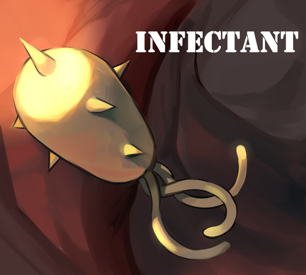

Projects

Io
Lead Designer at WolverineSoft Student Studio (01/2020 - 05/2020)
AboutIo is a 2D adventure platformer made by the University of Michigan's video game development club, where you use Io's teleportation and time-slow abilities to traverse the deadly terrain and monsters of a deep abyss.
Read more...

DREAMWILLOW
Lead Designer and Programmer at WolverineSoft Student Studio (09/08/2019 - 12/08/2019)
AboutDREAMWILLOW is a top-down 2D twin-stick shooter made by the University of Michigan's video game development club, where you resurrect your felled foes to fight alongside you in a dreamlike forest.
Read more...

Infectant
Gameplay Programmer at WolverineSoft Student Studio (06/2019 - 08/2019)
AboutInfectant is a top-down 2D adventure game made by the University of Michigan's video game development club, where you must adopt the perspective of a bacterium that has infected a human body, as it tries to
survive against the overwhelming assault of the immune system.
Read more...